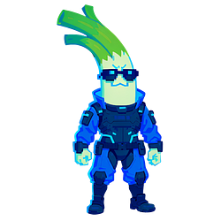

Bem-vindo(a), fã de Grand Theft Auto!
Este site é um projeto pessoal e não oficial criado para organizar e apresentar, de forma clara e navegável, tudo o que já foi divulgado publicamente sobre GTA VI — desde o início do desenvolvimento até os dois grandes vazamentos que marcaram a trajetória do jogo (2022 e 2026), passando por personagens, elenco, mapa, veículos, rádios e os easter eggs deixados pela Rockstar em GTA V Online.
Ao todo, o projeto é dividido em 11 páginas temáticas além desta, cada uma cobrindo um aspecto diferente do jogo. Use o índice logo abaixo, ou o menu no topo, para navegar entre elas.
"Vice City nunca pareceu tão viva." — comentário recorrente de fãs sobre os materiais divulgados.
Destaque: Primeiro Trailer Oficial
Resumo Rápido
- Cidade principal: Vice City, no estado fictício de Leonida (baseado na Flórida)
- Protagonistas: Jason Duval e Lucia Caminos — a primeira protagonista jogável principal da franquia
- Engine: RAGE, em sua versão mais atualizada
- Lançamento previsto: 19 de novembro de 2026, para PS5 e Xbox Series X|S
Linha do tempo simplificada
- 2019/2020 — Início confirmado do desenvolvimento
- Set/2022 — Grande vazamento de vídeos internos de gameplay (grupo Lapsus$)
- Dez/2023 — Anúncio oficial e lançamento do primeiro trailer
- 2024/2025 — Novos detalhes e material de imprensa liberado aos poucos
- Ago/2026 — Segundo grande vazamento, pelo grupo CyberLeek, e estreia do "Olhar Estendido"
- Nov/2026 — Lançamento previsto do jogo
Expectativa da comunidade
11 de 11 páginas temáticas
O que você vai encontrar neste site
Cada linha da tabela abaixo é uma página inteira do projeto. Clique em "Acessar" para ir direto ao assunto que mais te interessa.
| Página | O que você encontra | Acessar |
|---|---|---|
| 1. Desenvolvimento | Linha do tempo completa da produção do jogo, da pré-produção aos trailers. | Acessar |
| 2. O Vazamento (2022) | Como aconteceu o vazamento de setembro de 2022 e a ligação com o grupo Lapsus$. | Acessar |
| 3. Personagens | Protagonistas, atores confirmados e os principais coadjuvantes da história. | Acessar |
| 4. O Vazador e Investigação | Quem foi identificado pelo vazamento de 2022, o julgamento e o desfecho do caso. | Acessar |
| 5. Easter Eggs | Referências a GTA VI escondidas dentro de GTA Online e do modo história de GTA V. | Acessar |
| 6. Atores Confirmados | Elenco oficial, seus personagens e como a comunidade descobriu cada um deles. | Acessar |
| 7. Rádios | Estações de rádio confirmadas e especuladas, e seus estilos musicais. | Acessar |
| 8. O Vazamento (2026) | O caso CyberLeek: os vídeos, a memecoin, o comunicado da Rockstar e as intimações judiciais. | Acessar |
| 9. Marketing | A estratégia de divulgação da Rockstar e a proposta de parceria com Miami-Dade. | Acessar |
| 10. Veículos | Carros, motos, barcos e aeronaves já confirmados nos trailers e no material oficial. | Acessar |
| 11. O Mapa de Leonida | As seis regiões oficiais do mapa, locais nomeados, fauna e o tamanho especulado. | Acessar |
Prévia visual do site
Uma pequena amostra do que cada página traz — clique em qualquer imagem para ir até ela.

O Vazador (2022) |

Atores Confirmados |
 O Vazamento (2026) |

Veículos |

O Mapa de Leonida |
Perguntas frequentes
Este é um site oficial da Rockstar Games ou da Take-Two?
Não. É um projeto de fã, feito de forma independente, reunindo apenas informações já divulgadas publicamente pela imprensa e pela própria Rockstar Games.
Os vídeos e imagens de vazamentos estão hospedados aqui?
Não. Por se tratar de material obtido de forma ilegal, este site não reproduz o conteúdo original dos vazamentos — apenas descreve o que foi divulgado, com base em fontes jornalísticas.
O site vai continuar sendo atualizado?
Sim. Conforme novas informações oficiais forem divulgadas pela Rockstar — e conforme o lançamento do jogo, em 19 de novembro de 2026, se aproximar — novas páginas e atualizações devem ser adicionadas ao projeto.